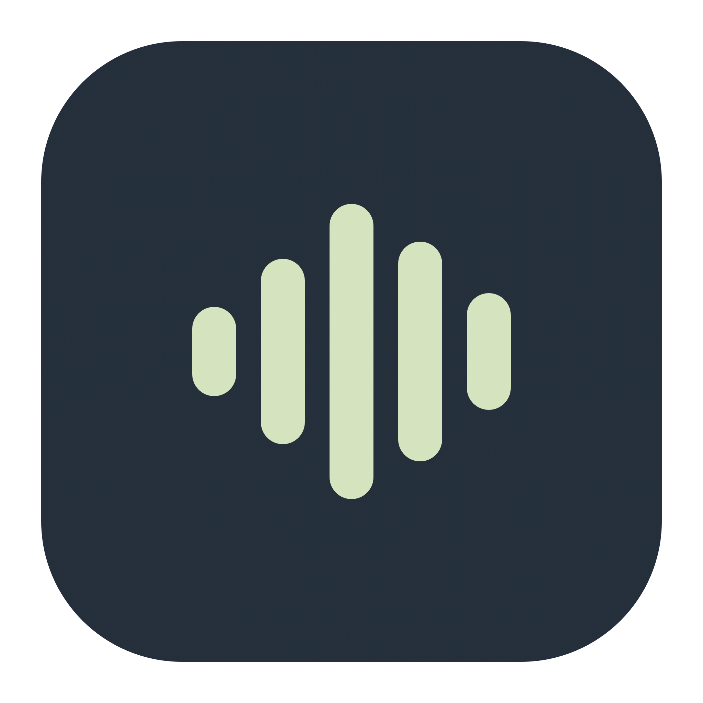

Speak where you type
Dictate into an editable field with a hold-to-talk shortcut. If focus changes or insertion fails, your transcript stays available to copy.

doclinHold a key. Say what you mean. Keep your dictation on your own device.
Doclin turns speech into text and reads short updates from your coding agents. Local processing is the default.
Early preview. Free source; no account or subscription. Signed app downloads are coming later.
Hold Right Command
Speak into your Mac
Release to insert your words
Workflow illustration. The app shows a compact recording pill.
Dictate into an editable field with a hold-to-talk shortcut. If focus changes or insertion fails, your transcript stays available to copy.
Get short spoken updates from Codex and Claude Code. Pause announcements, choose a voice, and keep old responses quiet.
The main app is MIT licensed. Read the code, build it yourself, or contribute improvements. Bundled speech components retain their own licenses.
Local dictation does not upload your recording. Optional cloud features change that boundary—and stay off until you enable them.
Read the complete privacy detailsSpeech models may download during setup. Clipboard insertion leaves text on your clipboard; clipboard managers have their own retention policies.
Enable OpenAI transcription to send a recording, cleanup to send a transcript, or notification summaries and voice to send selected text.
These features need your own API key. Provider charges and data policies apply. Enabling them means that feature is no longer fully local.
You’ll need a Mac and a current Apple development toolchain. Enhanced transcription requires supported macOS 26 hardware and language.
The preview needs Microphone permission. Right Command and automatic insertion also need Accessibility access.
Complete build and setup instructionsgit clone https://github.com/shawonibnkamal/doclin-macos.git cd doclin-macos python3 scripts/voice/fetch.py swift run DoclinChecks SIGN_IDENTITY=- ./scripts/build.sh
Source builds are ad-hoc previews. Rebuilding can require permission renewal. Public signed and notarized downloads are not available yet.
We haven’t established that. Doclin’s focus is local processing and a simple Mac workflow. Names, corrections, accents, and noisy rooms need direct testing. Review important numbers and meaning.
No. Doclin inserts text or keeps it available to copy. It does not press Send or Return. Some editors may not confirm insertion; check your destination field.
Yes. Local dictation and local speech need no API key. Apple’s speech assets and build dependencies may download during setup, but local-mode recordings are not uploaded by Doclin.
Local speech works offline, but may sound robotic. macOS voices are selectable. Optional OpenAI speech is available with your own API key; it sends spoken text to OpenAI.